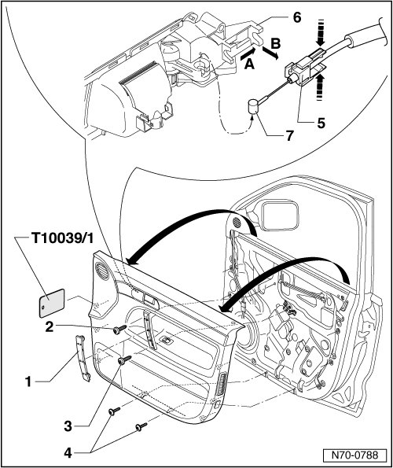

Passenger Side Front Door Trim
Passenger Side Front Door Trim
Removing
- Switch off ignition.
- Using a screwdriver, pry upper part of handle molding - 1 - out of inside door handle in door trim.
- Remove bolts - 2 - and - 3 -.
- Remove the two bolts - 4 -.
- Using wedge (T10039/1) near securing points, pry door trim out of mountings.
- Separate door trim from door by pulling it upward.
- Press tabs in release retainer - 5 - together - arrows -.
- Remove release retainer - 5 - from inside door release mechanism - 6 - - arrows A and B -.
- Disengage release - 7 - from interior door mechanism - 6 -.
- Depending on vehicle equipment, disconnect electrical components from wiring harnesses.
- Detach wiring harnesses from door trim.

Installing
- Perform the steps used for removal in reverse order.
• Before installing, inspect the securing clips for damage and replace if necessary.